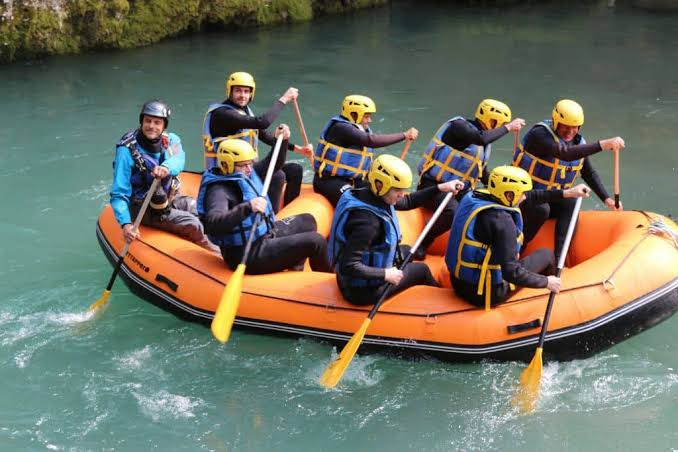
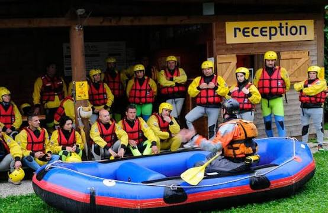
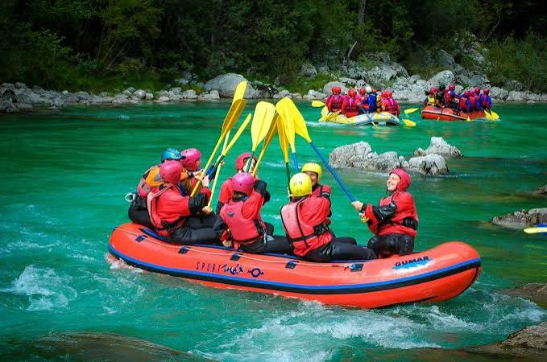
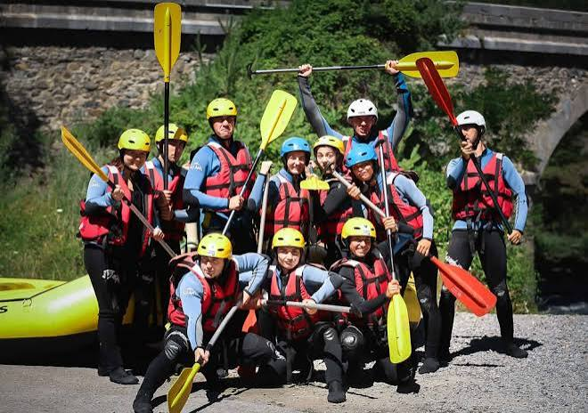
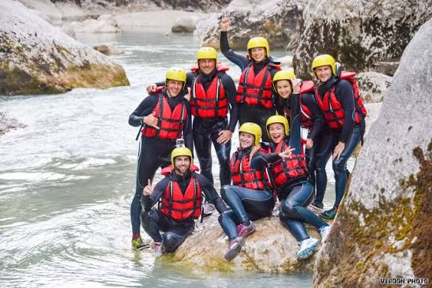

At River Rush Rafting, our mission is to help people enjoy exciting outdoor adventures while creating unforgettable memories on the river. We believe rafting is a great way to connect with nature, challenge yourself, and have fun with family and friends. Our experienced guides are committed to providing safe, enjoyable, and memorable experiences for everyone. Whether you are a beginner or an experienced rafter, we offer adventures for different skill levels. We also encourage our guests to respect and appreciate the natural environment while enjoying the beauty of the river. At River Rush Rafting, we want every trip to be an exciting experience that you will remember for years to come.

River Rush Rafting
History
Founded in 2010 by a passionate team of outdoor enthusiasts, River Rush Rafting began as a small local guided tour service with just two rafts and a vision to share the beauty of wild rivers with adventure seekers. Over the years, the company has grown into a premier whitewater rafting operator, known for its commitment to safety, expert guides, and unforgettable river expeditions. Today, River Rush Rafting offers a wide range of trip options for all experience levels from thrilling Class IV rapids for adrenaline seekers to scenic, family-friendly river floats. Driven by a strong dedication to environmental conservation and exceptional customer service, River Rush Rafting continues to inspire thousands of adventurers every season to explore the outdoors and conquer the river.
Adventure Awaits You!




